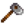
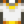

Dwarf Scroll I
Jump to navigation
Jump to search
| Dwarf Scroll I | |
| A yellowed scroll of parchment filled with dwarven script. This one's tied with a red bow. | |
| Information | |
| Artifact Spots: | N/A |
| Monster Drops: | |
| Other Sources: |  Tilling in The Mines or Skull Cavern (any floor) (0.16%) |
| Donation Reward: | Dwarvish Translation Guide |
| Sell Price: | |
The Dwarf Scroll I is an Artifact that can be found in the Mines or Skull Cavern on any floor by tilling soil, or as a drop from Bats, Bugs, Cave Flies, Duggies, Green Slimes, Grubs, Rock Crabs, or Stone Golems (0.5% chance).
Donation
Donation of this item contributes to the total count of donations for the Museum.
Donating all 4 Dwarf Scrolls rewards the player with the Dwarvish Translation Guide.
Gifting
| Villager Reactions
| |
|---|---|
| Like | |
| Dislike | |
Tailoring
Dwarf Scroll I can be used in the spool of the Sewing Machine to create the dyeable Gold Trimmed Shirt. 
Quests
One Dwarf Scroll I may be requested by Ghostfish in a Fish Pond quest to increase the capacity of the pond from 7 to 10.
Tip
- Floors 15, 55 and 95 in the Mines has tillable soil near the entrance to the floor. The player can repeatedly revisit these floors via the elevator to till the soil and farm for Dwarf Scrolls I.
History
- 1.4: Can now be used in Tailoring. Can be requested in Fish Pond quests.
- 1.5: Artifacts are now liked by the Dwarf and Penny, disliked by all other NPCs.